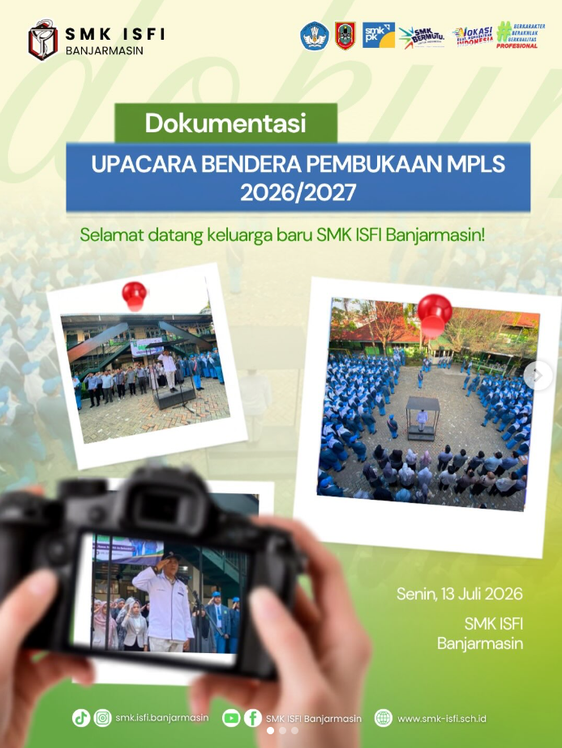
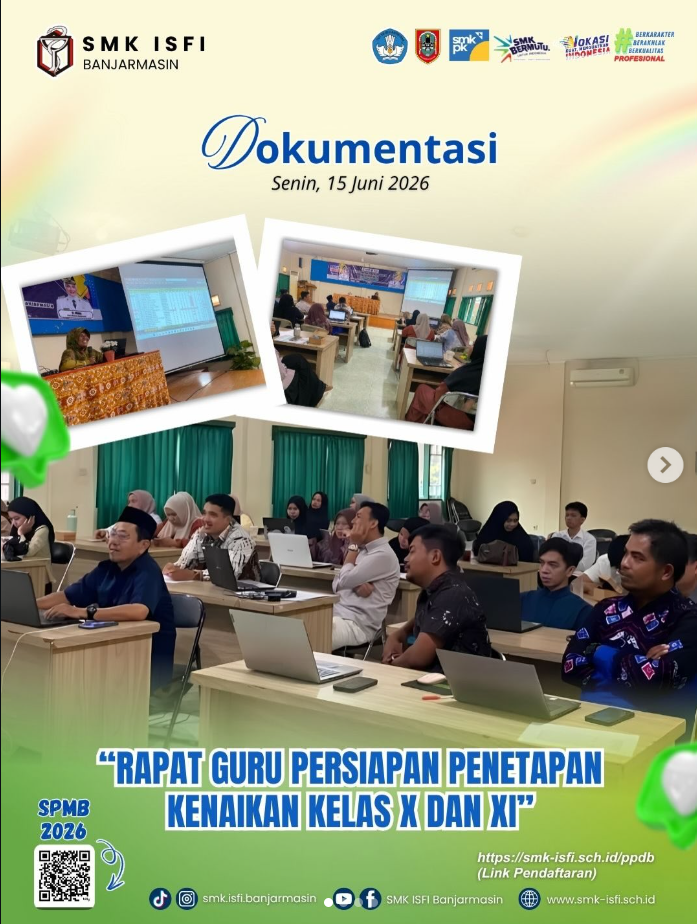
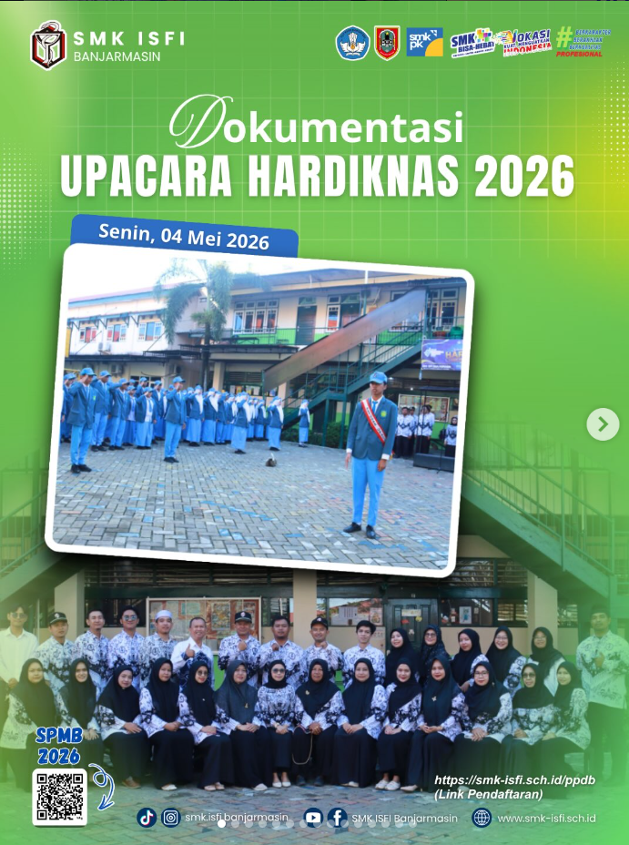
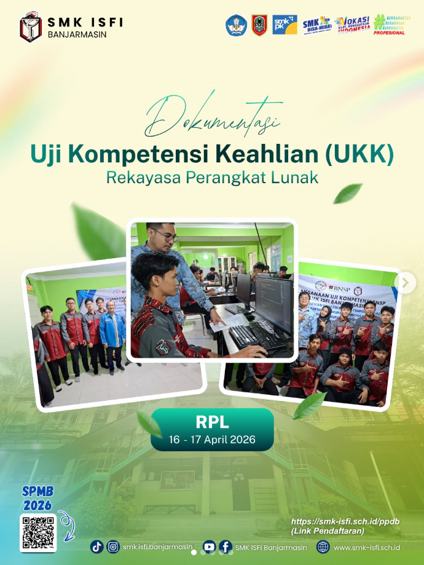
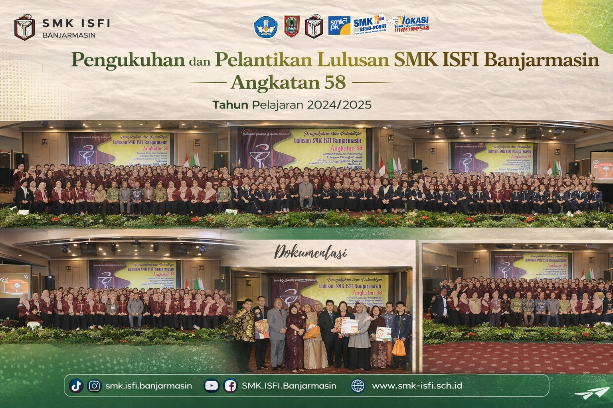

TENAGA PENDIDIK
Guru Pengajar

Ahmad Syauqi, S.Pd
Guru Pengajar

Nama Guru
Guru Pengajar

Nama Guru
Guru Pengajar

Nama Guru
Guru Pengajar
SELAMAT DATANG DI
Mencetak generasi yang kompeten, berkarakter, profesional, dan siap menghadapi dunia kerja maupun melanjutkan pendidikan.

SMK ISFI BANJARMASIN
Guru
Siswa Aktif
Alumni
Tahun Berdiri
TENTANG SEKOLAH
SMK ISFI Banjarmasin merupakan sekolah kejuruan yang berkomitmen mencetak generasi terampil, profesional, dan berkarakter.
Berdiri sejak 1 September 1965, SMK ISFI Banjarmasin terus berkembang melalui pendidikan kejuruan yang relevan dengan kebutuhan dunia kerja dan industri.
Lihat Program Keahlian →KENALI SEKOLAH KAMI
Kenali lebih dekat lingkungan, kegiatan, dan kehidupan sekolah SMK ISFI Banjarmasin.
PROGRAM KEAHLIAN
PRESTASI SEKOLAH
Berbagai pencapaian dan prestasi siswa SMK ISFI Banjarmasin.
TENAGA PENDIDIK
Guru Pengajar
Guru Pengajar
Guru Pengajar
Guru Pengajar
DOKUMENTASI



KENANGAN ALUMNI
Masa sekolah mungkin telah berlalu, tetapi cerita dan kenangan di SMK ISFI akan selalu menjadi bagian yang berharga.
Lihat Galeri Kenangan →
HUBUNGI KAMI